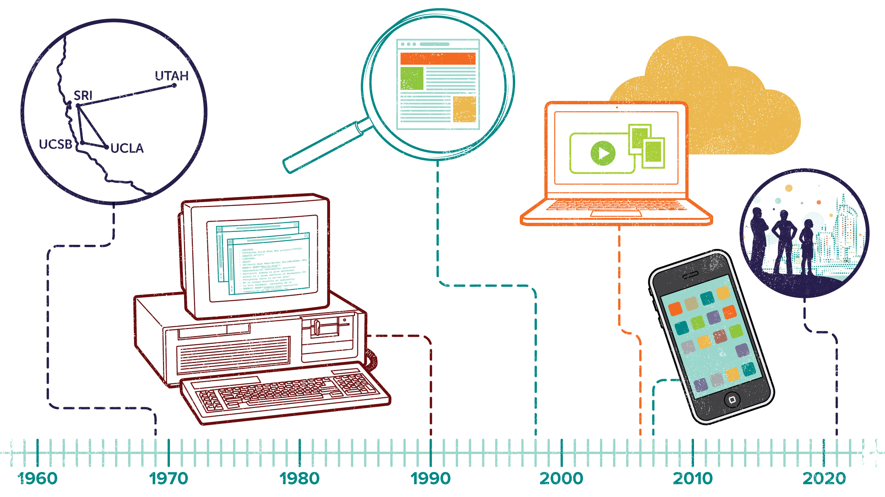

The Internet is a global network of billions of computers and other electronic devices. With the Internet, it's possible to access almost any information, communicate with anyone else in the world, and do much more. You can do all of this by connecting a computer to the Internet, which is also called going online. However, considering how much of an influence the Internet has in our daily lives, how many of us actually know the story of how it got its start? Most of our daily lives are saturated with social media, online shopping, and browsing for new information, but how did we get to this point? While the complete history of the Internet could easily fill a few books, this website should familiarize you with key milestones and events related to the growth and evolution of the Internet.
Internet has evolved over time. Starting of Internet was in United States more than 50 years ago as a government weapon during cold war. In 1950 a professor from Massachusetts Institute of Technology named J.C.R Licklider proposed a vision about Internet, which enables sharing of information through computers through a network. We can go through the different milestones of internet evolution in the following pages.